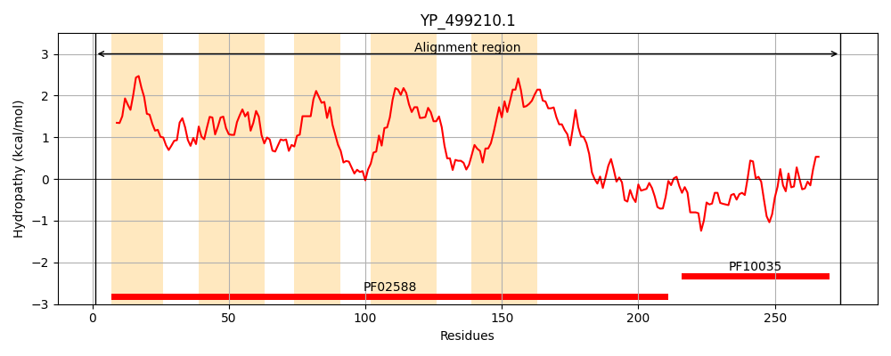
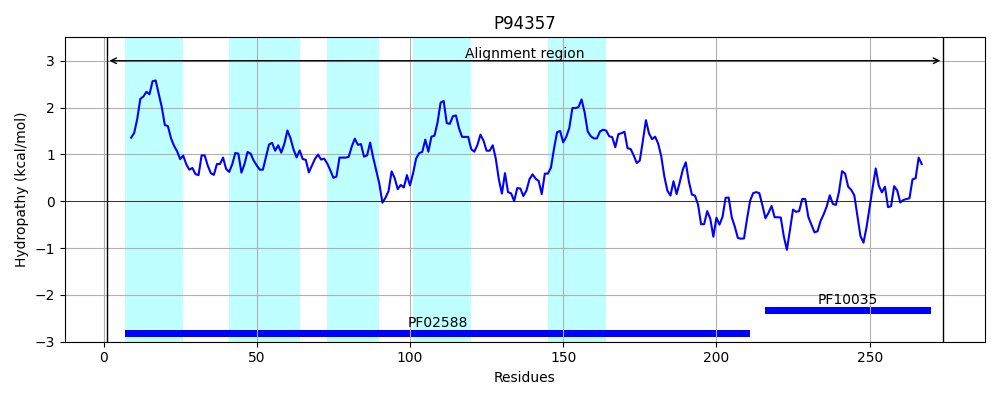
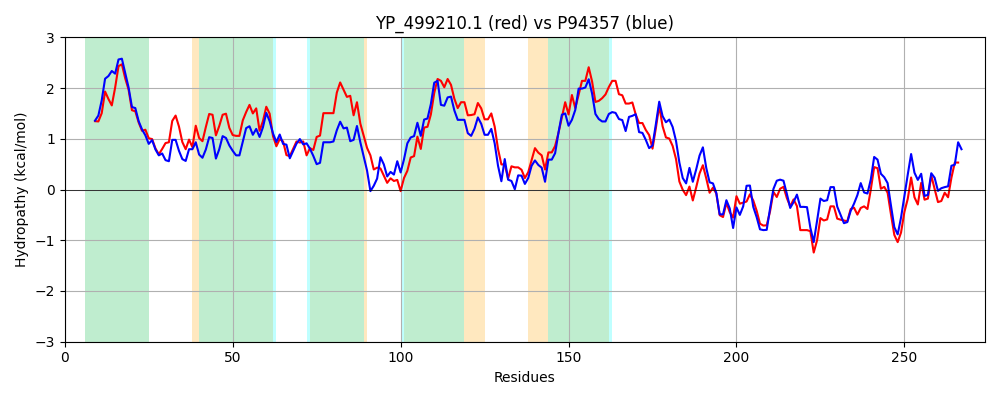

Hit Accession: P94357
Hit TCID: 2.A.115.1.2
Hit Description: gnl|BL_ORD_ID|11701 gnl|TC-DB|P94357|2.A.115.1.2 UPF0750 membrane protein YxkD OS=Bacillus subtilis (strain 168) GN=yxkD PE=3 SV=1
Mach Len: 274
e:0.000000
Query TMS Count : 5
Hit TMS Count: 5
TMS-Overlap Score: 4.900000
Predicted Substrates:None
BLAST Alignment:
Score: 769 , Bit scores: 300 bits, E-value: 6.8e-103, Alignment length: 274, Percentage identity: 52
Query: 1 MNKTVKDLILVVLGSFIFAAGVNAFIISGNLGEGGVTGLAIILYYAFHISPAITNFLVNAVLIAIGYKFLSKRSMYLTILVTILISIFLSLTESWQVETGNSIVNAIFGGVSVGLGIGVIILAGGTTAGTTILARIATKYLDVSTPYALLFFDMIVVAISLTVIPLDKVLVTVISLYIGTKVMEYVIEGLNTKKAMTIISTNPDKLAKAIDEQIGRGLTILNGHGYYTREEKDVLYVVISKTQVSKAKRLIKQIDKDAFLVIHDVRDVYGNGFL 274
M K + D++++V+G+F FA VN F I +LGEGGVTG+ +ILYY F SP +TNF++NA L+ IGYKFL ++ TI+ S+FL LT W + + I+N IF GV G+GIG+II GGTTAG+ ILARIA KYLD + YALLFFD+IVV S +I +K++ T++ LYIGTKVM+++IEGLNTKKA+T+IS N ++A+ ++ + RG+TIL+G G YT + K++LY+VI+K ++S K++I+ DK AF+++HDVRDV+G GF+
Sbjct: 1 MKKRMLDVLMLVIGAFFFALAVNLFAIPNDLGEGGVTGITLILYYLFQWSPGVTNFILNAFLLLIGYKFLDGKTTVYTIIAVAANSLFLHLTHGWSIPSDELIINTIFAGVFAGVGIGMIIRVGGTTAGSAILARIANKYLDWNISYALLFFDLIVVFSSYFIIGAEKMMFTIVMLYIGTKVMDFIIEGLNTKKAITVISENKSEIAEQVNTLMDRGVTILSGKGNYTGQSKEILYIVINKQELSMLKKIIRSCDKKAFVIVHDVRDVFGEGFV 274 | Protein Hydropathy Plots: |
|---|
|  |  |
Pairwise Alignment-Hydropathy Plot:
|
|---|
|  |